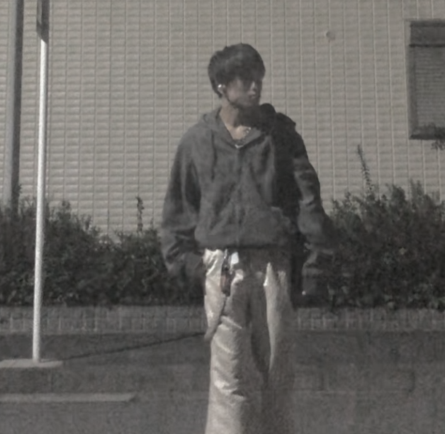
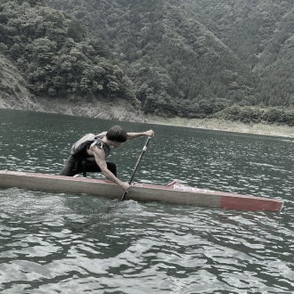
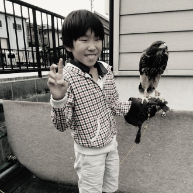
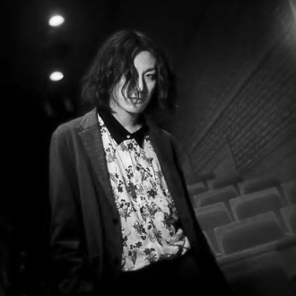
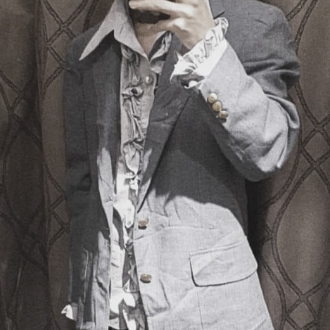

私について

私について

生い立ち

2004年に冨田家として生まれ高校三年生まで静岡県に住んでいました。
静岡県立川根高校に入学し、カヌー部という部活動に所属しておりまし
た。インターハイに出場し、準決勝で落ちてはしまいましたが
三年間
を通して、人生で一番濃密な三年間だったと今でも思っています。隣の
写真は現役で練習に取り組んでいる様子の写真になります。

幼少期からパソコンを触るのが好きで将来はパソコンを触るような職業
に就くか、アパレル店長として働きたいという夢がありました。私がデ
ザインをやる理由は高校の時に出会った先生が以前、広告代理店で働い
てた時のお話をお聞きして、大変そうだけど絶対楽しいと私は感じ、デ
ザイナーになりたいと思い入学しました。Webデザイナー・Webコーダ
ーになりたいのと、アパレルの仕事もしたいという夢は諦められないの
で二つの夢を叶えるために、努力しています。
私の趣味
私の趣味である音楽とファッションについて

最近流行であるY2K、パンクファッションという所から私は、音楽
にも興味を持ち、深掘りしていました。代表バンドでいう所、Sex
Pitols、Buzzcoksや私の大好きな志磨遼平が組んでいた毛皮のマリ
ーズを聞き、当時のカルチャーに触れることがとても面白いと感じています。

幼少期から母親にマネキンにされていたので、次第に自分もファッションに興味を
持ち始めました。名古屋で一人暮らしを始め、色々な服を着てその服の流行った時
代や特徴などを知るうちにいつか自分で古着屋を営業したいと思うようになりまし
た特に70sとパンクファッションが好きです。